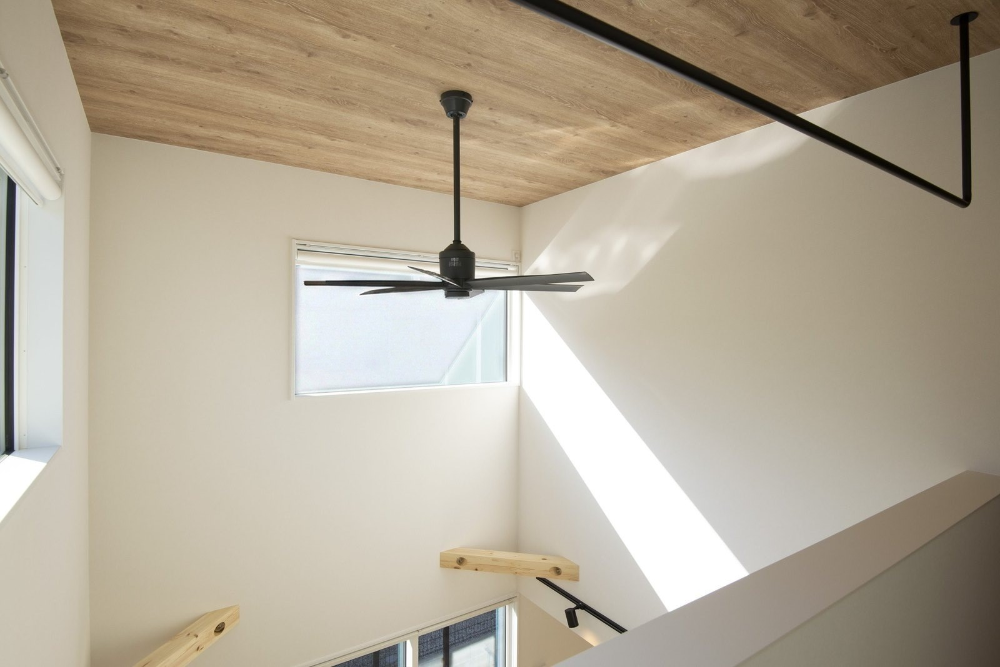
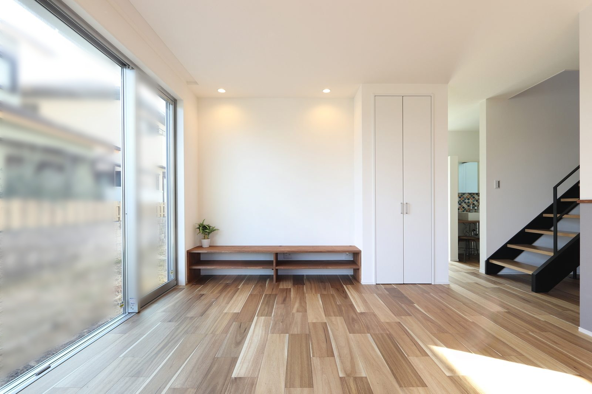

見学会の前にルームツアー動画を公開したとき、ふと思いました。
「これ、ネタバレでは？」
映画なら大問題です。
でも、家は違いました。
動画を見てから来てくださったお客様ほど、見学が濃くなるのです。
動画で分かること、現地でしか分からないこと
結論から言うと、ルームツアーはネタバレになりません。
動画と現地では、受け取れる情報がそもそも別物だからです。
とくに広さの感覚は、動画では当てになりません。
ルームツアーは広角レンズで撮るので、実際より広く見えます。
逆に、天井の高さの気持ちよさは、動画では伝わりきりません。
動画で「いいな」と思った家こそ、現地で答え合わせをしてください。

まずは3本、ご覧ください
当社の実例を、社長のYouTubeチャンネルで公開しています。
実際に奈良で建てたお家です。
まずは予習のつもりで、気になる1本からどうぞ。
動画の中の細かい仕様や価格は、撮影した当時のものです。
今の内容は 性能・標準仕様 と 価格・プラン のページをご覧ください。

「動画→見学」の順番で、家づくりは濃くなる
動画を見てから来てくださるお客様は、質問が違います。
「収納はどれくらいありますか」ではなく、「あの動画の階段下の収納、この土地でもできますか」。
この差は大きい。
限られた見学の時間を、答え合わせに使えるからです。
おすすめの順番は、こうです。
よくあるご質問
動画だけ見て決めてもいいですか？
おすすめしません。
動画は実際より広く見えますし、断熱・気密といった性能は映像に映りません。
家は数千万円の買い物です。
最低一度は、実物の空気の中に立ってから決めてください。
見学できる家はありますか？
完成見学会などの機会をイベントのページでご案内しています。
実際にお住まいのOB様のお家を見学できる応募型の見学もあります。
「暮らして何年か経った家」を見られるのは、モデルハウスにはない価値です。
見学会に行くと、営業されませんか？
その場で契約を迫るようなことはしません。
見て、聞いて、帰ってから家族で考えてください。
しつこい営業はいたしません。
それで選ばれなかったら、私たちの実力不足です。

奈良の工務店シバ・サンホームで、初めての家づくりに伴走しています。ルームツアーの撮影係もときどきやります。モットーはスピード・誠実さ・楽しさ。